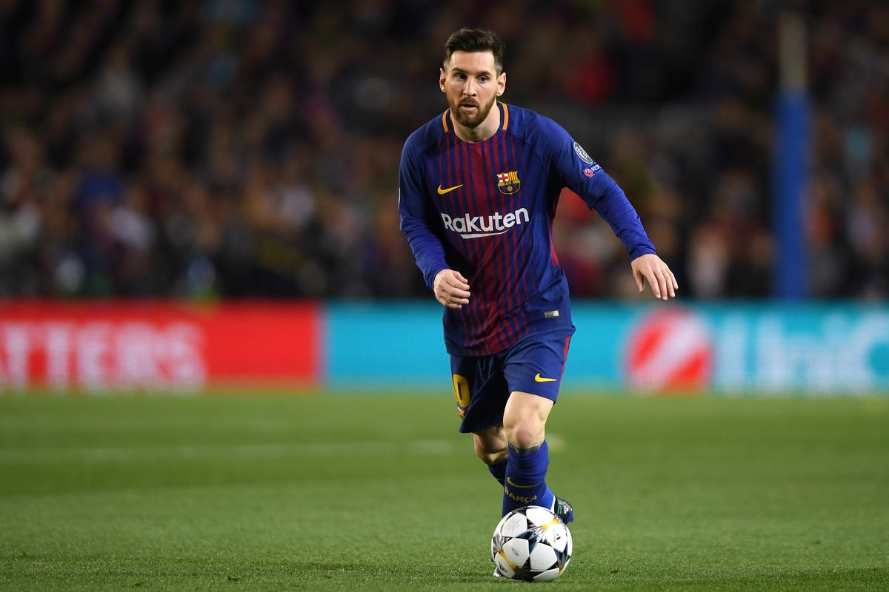

How Will They Line Up:
Barcelona’s lineup is not hard to predict, as they have so few options due to injuries and suspensions. In goal, Setien wouldn’t dream of playing anyone other than Marc-Andre ter Stegen, as he has been one of Barcelona’s best players this season. Barcelona only have 5 players available for selection in defense: Nelson Semedo, Gerard Pique, Clement Lenglet, Jordi Alba, and Junior Firpo. Samuel Umtiti is out with a knee issue. This defense will have to be at their very best, as Napoli’s forwards (Lorenzo Insigne, Dries Mertens, Arkadiusz Milik, Jose Callejon, Hirving Lozano) are the strongest part of their team.
In the midfield, Barcelona have even fewer options. Arthur, who was recently forced into a move to Juventus, is refusing to play in Barcelona’s Champions League campaign, and Sergio Busquets is out via suspension. This means that Barcelona’s midfield 3 will be made up of Frenkie de Jong, Ivan Rakatic, and Sergi Roberto. While this midfield 3 is certainly talented, it could certainly be overrun by Napoli’s midfielders. While de Jong has had a fine first season at Barcelona, Rakitic and Roberto have had poor seasons by their standards, and will be looking to prove that they should not be sold in the current transfer window.
In attack, it is unknown if Ousmane Dembele will play, as he is still regaining fitness after a hamstring injury. This leaves Antione Griezmann, Luis Suarez, Lionel Messi, and Ansu Fati available for Setien. I expect the first three to start, and we will see Fati come off of the bench early in the second half to bring an “X factor” to Barcelona’s attack.
It will be interesting to see how Setien fills out the bench for this match, as he has so few players available. I assume we will see an abundance of youth team players on the bench, and a few may even see some playing time if Barcelona runs riot in the match.
Player To Watch:
Lionel Messi (Age: 33, Position: Forward)
Who else? The best player in the world had another great season, racking up 30 goals and 26 assists in all competitions. He has carried an underperforming Barcelona team on his back this season, and without him they might not even have secured Champions League football. Messi will have to be at his best again for the Napoli match, as I don’t believe Barcelona can scrape by just on their away goal. Messi will need to help his team score, or do all of the work himself, as he has done on many occasions this season.

Prediction: Quarterfinals
I think Barcelona will beat Napoli (2-1 is my prediction), and they will make it to the quarterfinals. There they will most likely face a high-flying Bayern Munich side, who, at this time, are playing the best soccer in the world. I expect Barcelona to put up a good fight, but they will be no match for the Bavarians. They will lose (probably by quite a few goals), and will finish the season trophyless.